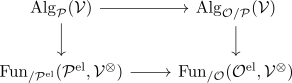

criterion for morita equivalences between cartesian patterns
Proposition
Let $f: \mathcal{O} \rightarrow \mathcal{P}$ is a morphism of cartesian patterns where $\mathcal{O}$ is an extendable cartesian pattern, such that
- $f^{\mathrm{el}}: \mathcal{O}^{\mathrm{el}} \rightarrow \mathcal{P}^{\mathrm{el}}$ is an equivalence
- for all $E \in \mathcal{O}^{\mathrm{el}}$
\begin{align*}
\mathrm{Act}_{\mathcal{O}}(E) \rightarrow \mathrm{Act}_{\mathcal{P}}(f(E))
\end{align*}
<the groupoid of actives> is an equivalence
Then $f$ is a morita equivalence between cartesian patterns, i.e. for all $\mathcal{V}^{\otimes}$ presentably P-monoidal category the
\begin{align*}
f^*: \mathrm{Alg}_{\mathcal{P}}(\mathcal{V}) \rightarrow \mathrm{Alg}_{\mathcal{O}/\mathcal{P}}(\mathcal{V})
\end{align*}
is an equivalence
Proof
Consider hte commutative diagram

Now by equivalence criterion for a functor between monadic adjoints
we need to show that for all $\varphi \in \mathrm{Fun}_{/ \mathcal{P}^{\mathrm{el}}}(\mathcal{P}^{\mathrm{el}}, \mathcal{V}^{\otimes})$ the map
\begin{align*}
f_{\mathcal{O}}f^{\mathrm{el,*} \phi \rightarrow f^* \mathcal{F}_{\mathcal{P}}(\varphi)
\end{align*}
is an equivalence